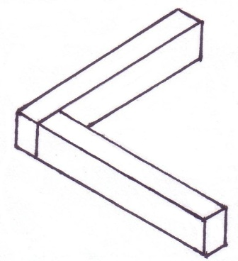
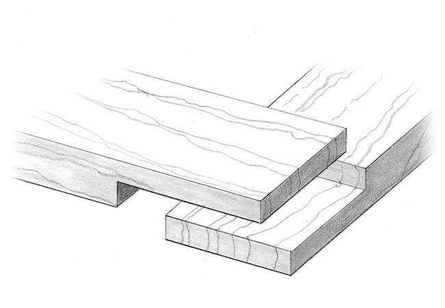
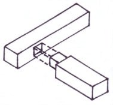
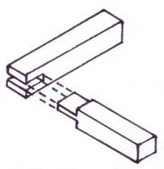
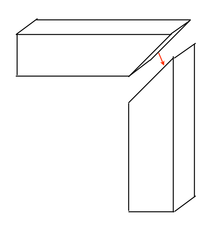
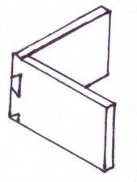
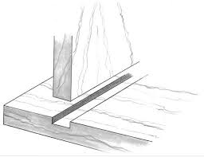

Joinery is the aspect of woodworking that involves joining two or more
pieces of lumber to create more complex configurations. Each type of joint
has it's own advantages and disadvantages and is used in applications where
it's advantages are maximized.
TYPES OF JOINTS
Butt Joint

A joint created by placing the ends of two pieces together without any special shaping.
Lap Joint

A joint formed by overlapping 2 pieces. If no material is removed from either piece, the joint is a "full lap". If material is removed so that both pieces are flush, the joint is a "half lap".
Mortise and Tenon

A joint formed by connecting two pieces, one with a rectancular hole, called a mortise and the other piece with a tounge, called a tennon. The mortise and tenon are cut so that the mortise fits exactly within the tenon when the two pieces are joined.
Bridle Joint

A joint with one piece cut with a mortise and the other with a tennon. In a bridle joint both the mortise and tenon are the same width as the piece.
Miter Joint

A joint formed by beveling the edges of two pieces placed together
to form a corner.
Dovetail Joint

A joint created by interlocking trapezoidal 'pins' and 'tails'.
The advatage of this joint is that it cannot be pulled apart once
the pins and tails are interlocked.
Dado Joint

A joint created by cutting a groove or 'dado' across the grain of plank
that accepts the edge of another plank.